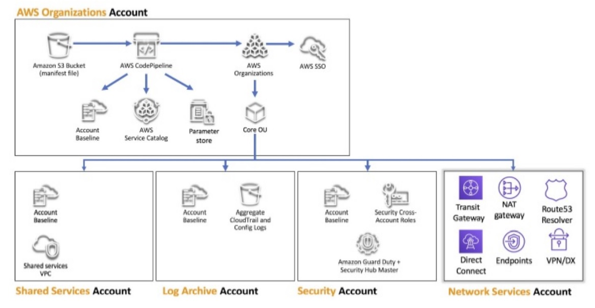

SCC
Brasil
os cloud gurus
Software Cloud Consulting
Your software development, cloud, consulting & shoring company
Carglass
For about 1 year SCC Brasil worked together with the Carglass internal IT Team to improve their
Cloud Infrastructure
Carglass is the biggest company in germany for windshield repair and replacement.
See company site:
Carglass
The first action was analyze the current setup and define epics to optimize the aws
infrastructure.
Carglass was already in progress to migrate their On Premise infrastructre to AWS.
They used EC2 to migrate VMs, which for example had 3rd party software running for various
internal applications.
The main business application was running on a Kubernets cluster, also on EC2 machines. Setup by
kubectl, so far EKS was not used.
RDS was also used as backend for various applications.
AWS Lambda was used for processing of small tasks, basically for maintenance of the AWS
infrastructe, not for business logic yet.
The issues were identified and priorized to bring their hybrid infrastructure on another
quality level
The first epics based on the Review were: Security, Account Structure, Improve RPO and RTO,
IaC
In this blog let's have a look on 3 maior epics
-Reorganize AWS Account Strucure
-Improve Desaster Recovery Strategy and therefore RPO and RTO
-Strict usage of IaC
Reorganize AWS Account Strucure
The current setup was a Master Account and 3 Stage Accounts (DEV, QA & PROD) .
It is already a good practice to separate the stages in separate accounts, but since it was neccessary to grant acess to external service providers to the accounts, the separation of all these parties on IAM level to grant only rights to their servers and resources, following the principle of least privilage, was difficult.
Too much administrator policies where granted, allowing changes on networking and also on actions on other domain resources.
The better approach was to define the account structure more granular and define more dedicated accounts with its on IAM roles.
The AWS Whitepaper gives an example for a multi-account scenario.

We followed this example with small changes, defining the following account strucuture with AWS Organizations :
Organizations Account - Master account with the IAM Users to login
Networking Account - Transit Gateway and Direct Connect , Adminstrator Access only for the Network Administator
Shared Services Account - Account for shared resoures and services to avoid too much VPC peerings between the other accounts
Main Stage Accounts DEV, QA & PROD
Stage Accounts for external service providers
Stage Accounts for Oracle and its servie provider
The separation in these dedicated accounts helped to apply the principle of least privilage, allowing the different roles only access to their resources.
The dedicated accounts where much more neatly, allowing the admins to stop or teminate manual created test/poc resources. Also consolidated billing helped the management to monitor the aws costs on a better granularity.
Improve Desaster Recovery Strategy and therefore RPO and RTO
All RDS instances where already creating daily snapshots, also EBS volumes, so the RPO was in most cases acceptable, here were only small improvements neccessary, but there a TODO with the RTO.
Not all resources where created with IaC (CloudFormation was used in general), some where created manually on the AWS Console and many of the resources created with IaC were modified over the time manually on the AWS Console ( and not the Cfn Stack),
which caused drifts on many Stacks and therefore possible problems when updating or re-creating these resources. To allow the team to re-create all resources in the case of a desaster recovery, the strict usage of IaC must be implemented.
Strict usage of IaC and deployment with CI/CD
The CloudFormation Stacks were re-structured :
-The stacks were layered to better separate the logical and strucutural elements:

A VPC Stack would now only contain VPC and Network resources, but no other resources like for example S3 Buckets.
Therefore the application developers never had to touch VPC or Route53 Stacks, but only their Application Layer Stacks.
-The stacks were ordered in the git repo by their layers to allow them to re-deploy in the correct orders.
Cross-References with Outputs in Inputs Values were used, but in this case of course the Stack containing the Output must be deployed first.
-The Stacks used in 3 Stage Accounts were unified to a single stack and parameterized instead of having 3 stacks almost being 95% equaly.
- All Stacks were deployed by Jenkins
-Drift detection problems were sent by SNS Notifications
Cost Optimizations
The map programm was applied to the customer.
Since the customer migrated existing VMs/Servers from OnPremise to AWS, the AWS Migration Acceleration Program was a real good fit to save costs for Carglass.
See more infos on
AWS Migration Acceleration Program
After you create your server list in the migration hub and migrate to EC2, you can get discounts on basically any resource on aws which is tagged with the correct map tags:
- Key: "aws-migration-project-id"
Value: "MPE06XX"
- Key: "map-migrated"
Value: "d-server-01zt13xxxxxxxxx"
The EC2 instance sizes were optimized and Lambdas created to shut down and restart instances which were not
needed 24/7, but only during business hours.
Training and documentation
SCC Brasil held a couple of AWS training sessions to the infrastructe team to enable them to maintain the AWS infrastructe all alone in the future. Also a lot of documentation was written in the company Confluence, including Runbooks, Best practices, Troube Shooting etc
At the end of the project the account structure was cleaned up, IaC was strictly used, this way a lot of problems removed, the costs were optimized and the customer was enabled to manage its AWS platform .
Autor

Wolfgang Unger
AWS Architect & Developer
5 x AWS Certified
1 x Azure Certified
A Cloud Guru Instructor
Certified Oracle JEE Architect
Certified Scrum Master
Certified Java Programmer
Passionate surfer & guitar player